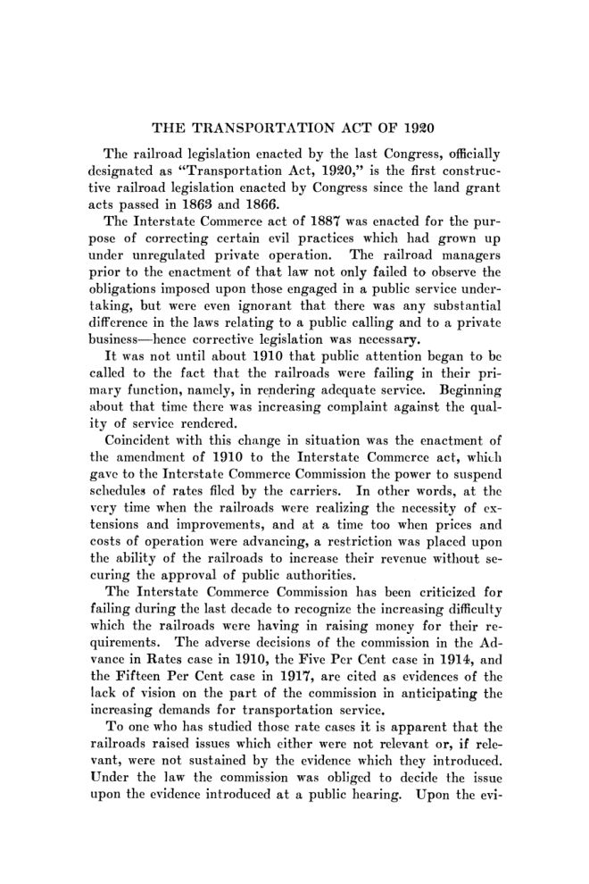

Rich, 1920: a lei que devolveu as ferrovias aos donos
Leitura: 9 min
Edgar J. Rich explica a lei ferroviária americana de 1920: o fim do controle federal, a junta de arbitragem do trabalho, a recaptura dos lucros das ferrovias fortes e os novos poderes da Interstate Commerce Commission.


Em junho de 1920, a Interstate Commerce Commission mandou que todos os vagões abertos fossem enviados às minas de carvão. Os demais embarcadores que usavam esse equipamento ficaram sem transporte, e a construção de prédios e estradas, que dependia de areia, cascalho e pedra levados nesses vagões, praticamente parou. Edgar J. Rich não discute se a ordem foi acertada; pode ter evitado um sofrimento maior. O que lhe interessa é o poder sobre a indústria que a nova lei de transportes dera a um órgão regulador em tempo de paz.
O artigo, publicado na American Economic Review de setembro de 1920, descreve a Transportation Act, 1920, que Rich considera a primeira legislação ferroviária construtiva do Congresso desde as leis de concessão de terras de 1863 e 1866. Ele separa as regras transitórias, ligadas ao fim do controle federal, das permanentes, que redefinem a regulação.
Por que o Congresso precisava de uma lei nova?
A lei de comércio interestadual de 1887, lembra Rich, foi corretiva: veio para coibir práticas abusivas de dirigentes que nem percebiam a diferença entre um serviço público e um negócio privado. Por volta de 1910, a queixa passou a ser outra: as ferrovias falhavam na função principal, a de prestar serviço adequado. No mesmo ano, uma emenda deu à comissão o poder de suspender tabelas de tarifas, justamente quando as ferrovias precisavam ampliar instalações e os custos subiam.
A comissão foi criticada pelas decisões contrárias nos casos de aumento de tarifas de 1910, de 5% em 1914 e de 15% em 1917. Rich acha difícil ver como ela poderia ter decidido de outro modo, porque as ferrovias levantaram questões irrelevantes ou não sustentadas pelas provas; mas reconhece que, por volta de 1910 a 1914, a mudança no nível de preços teria justificado aumentos. O comitê conjunto do Congresso conhecido como Newlands Committee iniciou audiências em novembro de 1916, interrompidas pela guerra; em 1919, as comissões de comércio das duas casas retomaram o exame. A Câmara aprovou o projeto Esch, que aperfeiçoava a regulação existente; o Senado, o projeto Cummins, que rompia com ela. A lei saiu da conferência como combinação dos dois.
Como se encerrou o controle federal?
O controle federal terminou em 1º de março de 1920. Para evitar desorganização e falências, o governo garantiu por seis meses às empresas que o aceitassem a mesma compensação paga durante a operação estatal, com a obrigação de devolver o que ganhassem acima dela. A maioria aceitou, e Rich não tem dúvida de que isso evitou uma crise financeira. As dívidas das ferrovias com o governo, por equipamentos e obras feitos na guerra, podiam ser consolidadas por dez anos a 6% de juros, e o Congresso destinou US$ 300 milhões a empréstimos para o período de transição. O diretor-geral das ferrovias passou a ser pouco mais que um liquidante de reclamações.
Como a lei trata as greves?
O Senado aprovara arbitragem compulsória e a proibição de combinações para interromper o transporte; a Câmara ficou com uma arbitragem voluntária fraca. O texto final não proíbe greves. Empresas e empregados têm o dever de evitar interrupções; juntas de ajuste, criadas por acordo, decidem queixas, regras e condições de trabalho, mas não salários. Os salários ficam com a Railroad Labor Board, com sede em Chicago e nove membros nomeados pelo presidente, cada um com salário de US$ 10 mil por ano: três indicados pelos empregados, três pelas ferrovias e três do público. Uma decisão exige cinco votos, entre eles o de um representante do público, já que os aumentos de salário recaem sobre o público.
A junta deve considerar sete critérios para salários justos e razoáveis: os salários de trabalhos semelhantes em outras indústrias, o custo de vida, os riscos do emprego, o treino e a habilidade exigidos, o grau de responsabilidade, o caráter e a regularidade do emprego e as desigualdades criadas por reajustes anteriores. Não há sanção penal; as decisões são registradas e divulgadas. A força da lei está na existência de um mecanismo permanente: quem fizer greve sem recorrer a ele perde o apoio do público. A greve dos manobreiros, feita à margem das irmandades ferroviárias, não foi evitada, mas foi condenada por elas, e a junta se recusou a ouvir os grevistas.
“Não se poderia estabelecer padrão mais justo da razoabilidade dos salários.” (“No fairer standard of the reasonableness of wages could possibly be determined.”)
Como resolver o problema das ferrovias fortes e fracas?
Serviço adequado depende de instalações; instalações dependem de emitir títulos; títulos só se vendem se a receita garantir juros e dividendos. A dificuldade, explica Rich, é que, em linhas concorrentes, as tarifas têm de ser iguais. Nos três anos anteriores à guerra, os melhores que as ferrovias já tiveram, a Chicago, Burlington & Quincy ganhou em média mais de 25% sobre o capital acionário, a Chicago & Northwestern cerca de 12%, e a Rock Island e a Chicago Great Western só cerca de 1% ou 2%. Tarifas que restabelecessem o crédito das duas fracas dariam às duas fortes receita muito acima do necessário. O princípio, diz Rich, foi apresentado ao Senado pela Associated Industries of Massachusetts em janeiro de 1919, e o mérito de transformá-lo em lei é do senador Albert B. Cummins, de Iowa.
O mecanismo começa pela avaliação das propriedades. A comissão pode tratar o país como um todo ou dividi-lo em grupos, e, nos dois anos a partir de 1º de março de 1920, deve fixar tarifas que deem ao conjunto, sob administração honesta e eficiente, 5,5% sobre o valor agregado, mais até 0,5% para melhorias. Cada empresa pode ganhar pouco ou nada, ou 10% a 15% e mais. Depois de 1º de março de 1922, a comissão define o que é retorno justo. Rich defende que a expressão seja lida como o retorno capaz de financiar as necessidades das ferrovias, e não apenas como proteção contra o confisco; antes da guerra, lembra, era preciso um retorno líquido de cerca de 8,5% ou 9% disponível para dividendos para emitir ações ao par.
O que mais mudou nos poderes da comissão?
O Senado queria consolidar as ferrovias em 20 a 35 sistemas concorrentes de força parecida, de forma voluntária por sete anos e compulsória depois. Cummins teve de ceder na conferência, e a lei manteve só a consolidação voluntária, cujo êxito depende dos acionistas das empresas fortes. A comissão ganhou jurisdição exclusiva sobre a emissão de títulos, o que acaba com exigências estaduais como a taxa de US$ 600 mil cobrada por Illinois na consolidação do sistema New York Central, ou a condição que o Arizona quis impor a uma emissão de US$ 30 milhões da Southern Pacific. Rich vê aqui um risco: o poder de julgar se cada gasto é necessário pode levar a comissão a substituir o juízo dos diretores.
A comissão pode ainda corrigir tarifas intraestaduais que discriminem o comércio interestadual, como na longa disputa entre Texas e Louisiana; autorizar ou negar novas linhas e abandonos; fixar a divisão das tarifas conjuntas, considerando o retorno justo de cada ferrovia; e estabelecer tarifas mínimas, contra guerras de tarifas. A regra das distâncias longas e curtas passa a exigir que a tarifa ao ponto mais distante seja razoavelmente compensatória, expressão que, para Rich, só os tribunais vão esclarecer. Pelo serviço de vagões, a comissão pode regular o uso, a troca e o aluguel diário de vagões entre empresas, exigir uso comum de equipamentos e terminais e, em emergência, dar prioridades e embargos.
“Maior do que qualquer um já conferido a um departamento do governo em tempo de paz.” (“greater than ever was conferred upon any department of government in time of peace”)
Qual é o balanço do autor?
A lei também eleva o número de comissários para onze, com salário de US$ 12 mil, e proíbe, a partir de 31 de dezembro de 1921, sem autorização, que alguém seja diretor de mais de uma ferrovia. Rich a chama de radicalmente construtiva: seus objetivos são restabelecer o crédito das ferrovias sem pôr peso excessivo sobre os usuários e dar à comissão os poderes necessários para corrigir as falhas próprias de ferrovias operadas de forma independente. Destaca que se tenha construído um texto articulado a partir de dois projetos tão diferentes, com pouca ambiguidade fora da regra das distâncias longas e curtas, que, segundo ele, era ambígua de propósito. A lei pode não resolver todo o problema das ferrovias fortes e fracas, conclui, mas é um grande passo nessa direção, e a legislação seguinte provavelmente será apenas suplementar.
Na minha leitura
Na minha leitura, o núcleo econômico da lei é a tentativa de regular por grupo, e não por empresa. Quando concorrentes com custos muito diferentes precisam cobrar o mesmo preço, qualquer tarifa que salve a empresa marginal dá renda às eficientes. A recaptura de metade do excedente acima de 6% transfere parte dessa renda às fracas, sem igualar as tarifas a custos individuais, o que destruiria a concorrência entre as linhas.
O próprio Rich aponta o custo dessa solução: quanto mais o regulador decide sobre títulos, vagões, linhas e prioridades, mais se aproxima da administração. O dilema de toda regulação de infraestrutura está aí: garantir retorno suficiente para atrair capital sem tirar das empresas a iniciativa que justifica mantê-las privadas.
Glossário
- Interstate Commerce Commission
- comissão federal americana criada em 1887 para regular as ferrovias interestaduais.
- Controle federal
- operação das ferrovias pelo governo dos Estados Unidos durante a guerra, encerrada em 1º de março de 1920.
- Recaptura
- entrega ao governo de metade do lucro de uma ferrovia acima de 6% sobre o valor de sua propriedade.
- Retorno justo (fair return)
- rendimento sobre o valor da propriedade que a comissão deve permitir às ferrovias, em conjunto ou por grupo.
- Tarifa conjunta
- tarifa única para um transporte feito por mais de uma ferrovia, dividida entre elas.
- Regra das distâncias longas e curtas
- proibição de cobrar mais por um trajeto curto do que por um longo na mesma linha, salvo autorização.
- Serviço de vagões (car service)
- uso, controle, distribuição, troca e devolução de locomotivas e vagões entre as ferrovias.
Fontes
- The Transportation Act of 1920 — Edgar J. Rich (pp. 507–527). JSTOR · Internet Archive (PDF)
- Edição completa, com os demais artigos: Nº 165 do Arquivo.
Documento em domínio público (EUA, publicado antes de 1931), via JSTOR Early Journal Content e Internet Archive. Resumo e comentário do autor deste site, sem afiliação com a American Economic Association. Encontrou um erro? Escreva: a correção é publicada no próprio texto, com data.
← Fetter, 1920: a economia do preço contra a economia do bem-estar ↑ Nº 165 · Preço ou bem-estar, o imposto britânico e a lei das ferrovias de 1920